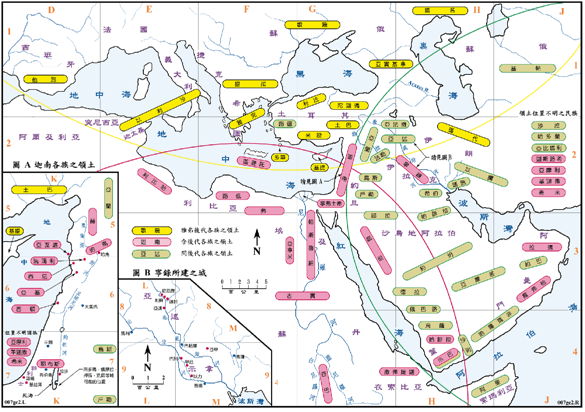

| 圣经 | 说明 |
|---|---|
| 创10:2-4 | 雅弗的后代。 |
| 创10:6-14 | 含的后代。 |
| 创10:8-12 | 宁录所建之城。(见图 B) |
| 创10:15-19 | 迦南的后代。(见图 A) |
| 创10:21-30 | 闪的后代。 |
| 创11:1-9 | 建巴别城和塔。(见图 B) |
创世记十章五节提到这些人 (挪亚的子孙) 的后裔，各自按宗族立国，分开居住，各随各的方言，因此创世记第十章就是一个最早的国族名单，名单中包括有人名、城市、民族、地区和国家等，只是定义并不明显。按理说，我们可以按照此一名单绘出一张当时国族完整的地图来，但是由於资料的不全，经整理后所绘出的图仅能作参考之用。资料不足的原因很多，除了圣经本身对各地区的分界并没有任何的说明之外，大部份名字只出现过一次，考证困难。而且国族长期以来的消长和迁徙，也都缺乏记录所致。本图则是参考 The Moody Atlas of Bible Lands 和 Baker's Bible Atlas 两书中之图，以及其他书籍之说明所绘制，虽然已尽可能的收集资料，但图中存疑之处仍甚多。
挪亚的三个儿子各成一个大族，他们分布的情形是不很规则，但是根据传统的说法，我们可以有一个概略的观念，就是以耶路撒冷为中心，向北、向东和向西南各划一个圆弧，各族各占有一个圆弧内之地。雅弗的后裔是定居在黑海和里【因中文系统之故，本书内文全部采用此字】海的附近，再向西延伸到西班牙，就是图中黄色圆弧以北的地区，所以希腊人、印欧语系的人和其他相关的族系，都是从雅弗而来。含的三个儿子则是移往非洲和阿拉伯半岛的东部，包括地中海东岸的迦南地，即是红色圆弧向西南所包围的地区，唯有宁录一支则分散到示拿和亚述等地。闪和他的后裔则定居在两河流域、阿拉伯半岛和里海南方，就是绿色圆弧以东的地区。
本图所示各族之位置，仅表示各族的发源地，并未包括以后的情形，因为民族会扩张、迁移或是消灭，所以在后面的一些地图中，有些民族的位置会与此图有所不同。
巴别城即是日后的巴比伦城，塔应是建在城内。